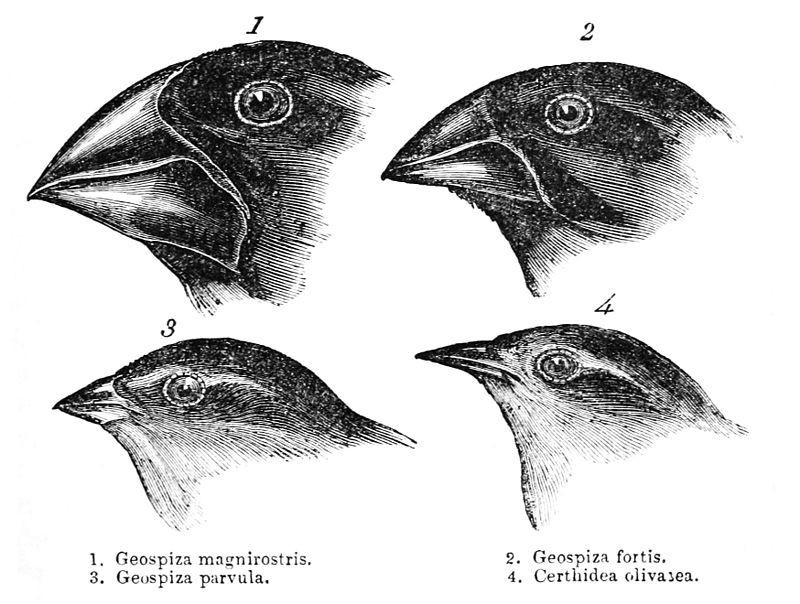
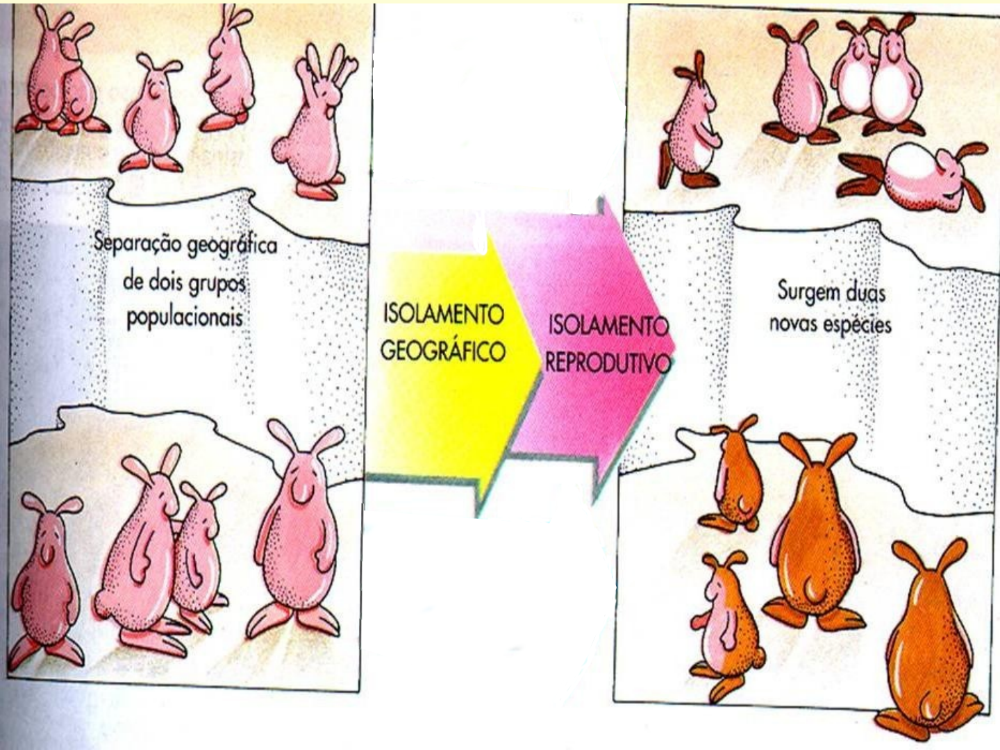
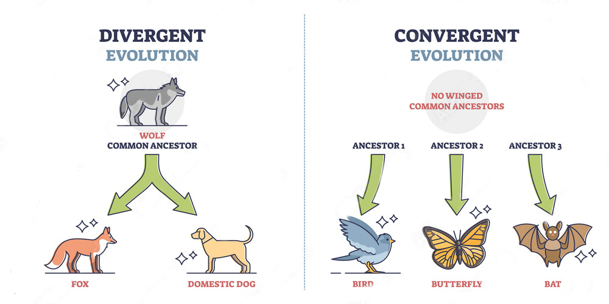

No Darwinismo clássico a variabilidade intraespecífica entre os indivíduos de uma população era fundamental, pois ela fornecia a (materia-prima) sobre a qual a seleção natural atuaria. Essas diferenças nas características dos indivíduos não eram vistas por Darwin como sendo criadas por um mecanismo explícito, mas sim como variações que surgiam em uma população.

A seleção natural é um dos principais mecanismos de evolução propostos por Charles Darwin em "A Origem das Espécies" \cite{darwin.origin.2008}. O processo natural ocorre quando indivíduos dentro de uma população possuem variações nas suas características (como tamanho, cor, resistência a doenças), e algumas dessas variações oferecem uma vantagem de sobrevivência e reprodução em determinado ambiente. Indivíduos com características vantajosas têm maior probabilidade de sobreviver, se reproduzir e transmitir essas características para as próximas gerações. Ao longo de muitas gerações resulta em mudanças significativas nas populações, levando à adaptação das espécies ao ambiente. Um exemplo clássico da seleção natural ocurreu nas ilhas Galápagos, onde Darwin observou que as espécies de tentilhões variavam em tamanho e forma do bico.
Luta pela sorevivência : Os recursos, como alimento, espaço e parceiros reprodutivos, são limitados, gerando competição entre os indivíduos, por exemplo num espaço com pouca água as plantas competem pela pouca quantidade disponível.
Sobrevivência dos mais aptos : Apenas indivíduos com características que conferem vantagens específicas no ambiente (como a capacidade de lutar, escapar de predadores ou resistir a doenças), terão mais chances de sobreviver até a maturidade e se reproduzir, transmitindo essas características para seus descendentes.
Acúmulo gradual de características favoráveis :A união sequencial de características ventajosas (por gerações) de varios indivíduos, ocasionará que os descendentes estejam melhor adaptados e dotados de múltiples características favoravéis. Destacando que em ocasiôes os individuos podem não possuir características adaptativas ao ambiente, mas sim características que facilitam sua reprodução.
Por vezes, as características associadas com a sobrevivência e adaptação não são as que garantem a preservação de uma espécie, mas sim as ligadas com a atração sexual de fémeas. Esta luta não acaba com a morte do contediente mais fraco, mas com a redução do número dos seus descendentes (ou a inexistência dos mesmos). A selecção sexual é por isso menos rigorosa que a selecção natural. Na natureza ocorre nos chifres dos veados, o esporão dos galos, as cores vivas nas aves pequenas, danças e cantos em outras espécies de aves.
As leis da variação propostas por Charles Darwin são princípios que explicam como as diferenças entre indivíduos de uma espécie surgem e como essas diferenças alimentam o processo evolutivo. Darwin declarou: "As alterações estruturais, tão complexas e inumeráveis, que podemos observar em toda a natureza, não podem ter sido todas simplesmente causadas por este tipo de acção.", ou seja, a seleção natural possui maior relevância, porém deve agir em simultaneidade com as leis da variação.

O uso ou desuso de orgãos e partes do corpo continuado ao longo de gerações da mesma espécie, refletem uma mudança na descendencia, seja desenvolvendo os músculos associados, ou atrofiando-os. Aclarando que este conceito deve entender-se como um subordinado da seleção natural, se o uso ou desuso for beneficioso para a sobrevivência da espécie uma mudança ocorrerá. Exemplificando: se a cauda de um rato for cortada seu descendente obviamente nascera com uma cauda normal, pois as mudanças não são inmediatas nem arbitrárias.
É extremamente comum encontrarmos espécies do mesmo género a habitar em países quentes e em países frios. Se considerarmos que todas as espécies de um género derivam de uma mesma forma parental, temos de supor que as espécies tiveram de passar por um processo de aclimatação ao longo das gerações. A adaptação de cada espécie ao clima do meio em que vive é evidente: as espécies do árctico, ou mesmo de um clima temperado,não conseguem aguentar um clima tropical, e vice-versa.
Numa área confinada, ou isolada, desde que não seja muito grande, as condições de vida, orgânicas e inorgânicas, são geralmente uniformes em todo o território. Assim, a selecção natural tenderá a modificar todos os indivíduos variáveis de uma espécie da mesma maneira. Nestas áreas, por estarem fechadas, o cruzamento com os habitantes dos territórios vizinhos é impossível. O isolamento permite que uma variedade nova se aperfeiçoe lentamente, como mostrado na imagem, sem constrangimentos temporais.

Na divergência seres vivos que, aparentemente, são diferentes podem apresentar semelhanças anatómicas, orgãos homólogos, que podem sugerir a existência de um ancestral comum, com um plano estrutural idêntico aos seus ascendentes. que por divisão territorial ou mudança do ambiente adaptaram-se a outro meio.
Por outro lado na convergência seres vivos de diferentes espécies sem um ancestro comun, desenvolvem orgãos análogos, adaptados ao ambiente onde habitam.